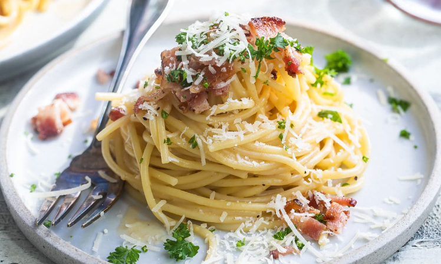
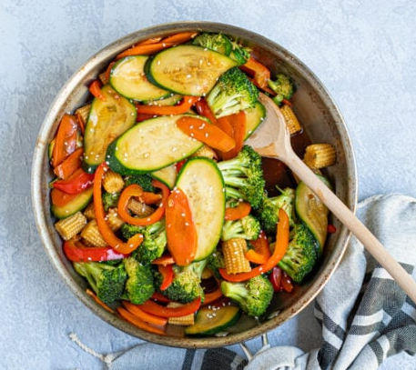
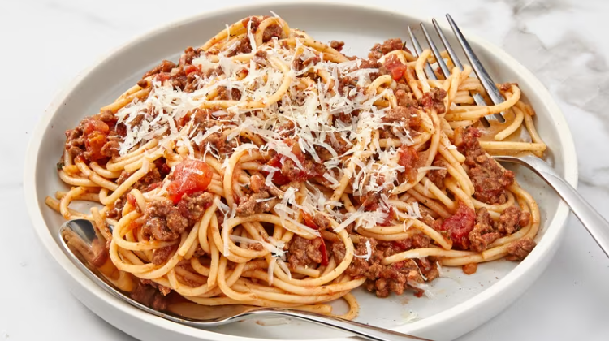

Recipes
Delicious Pasta Carbonara
Ingredients:
- 200g spaghetti
- 2 large eggs
- 100g Pecorino Romano cheese, grated
- 150g pancetta, diced
- Black pepper, freshly ground
Instructions:
- Bring a large pot of salted water to a boil. Cook the spaghetti until al dente, then drain.
- In a bowl, whisk together the eggs and grated Pecorino Romano cheese.
- In a skillet, cook the diced pancetta until crispy. Remove from heat and drain on paper towels.
- Add the cooked pasta to the skillet with the pancetta. Quickly toss to combine.
- Remove the skillet from heat. Pour the egg and cheese mixture over the pasta, tossing to coat.
The heat of the pasta will cook the eggs and create a creamy sauce. - Season with freshly ground black pepper to taste.
- Serve immediately and enjoy!
Healthy Veggie Stir-Fry
Ingredients:
- 1 cup broccoli florets
- 1 bell pepper, thinly sliced
- 1 carrot, julienned
- 1 zucchini, sliced
- 1 cup snap peas
- 2 cloves garlic, minced
- 2 tablespoons soy sauce
- 1 tablespoon sesame oil
- 1 tablespoon olive oil
- 1 teaspoon ginger, grated
- 1 teaspoon honey
- Sesame seeds for garnish
Instructions:
- In a small bowl, whisk together soy sauce, sesame oil, olive oil, ginger, and honey. Set aside.
- Heat olive oil in a large skillet or wok over medium-high heat.
- Add minced garlic and cook for about 30 seconds until fragrant.
- Add broccoli, bell pepper, carrot, and snap peas. Stir-fry for 3-4 minutes until vegetables are tender-crisp.
- Add zucchini and continue to stir-fry for an additional 2 minutes.
- Pour the sauce over the vegetables and toss to coat evenly. Cook for another 1-2 minutes.
- Remove from heat and garnish with sesame seeds.
- Serve the veggie stir-fry over cooked brown rice or noodles.
- Enjoy your healthy and delicious meal!
Classic Spaghetti Bolognese
Ingredients:
- 1 pound ground beef
- 1 onion, finely chopped
- 2 cloves garlic, minced
- 1 carrot, finely chopped
- 1 celery stalk, finely chopped
- 1 can (28 ounces) crushed tomatoes
- 1/2 cup red wine (optional)
- 1 teaspoon dried oregano
- 1 teaspoon dried basil
- Salt and pepper to taste
- 1/4 cup grated Parmesan cheese
- Fresh parsley, chopped, for garnish
- 12 ounces spaghetti
Instructions:
- In a large skillet or saucepan, cook the ground beef over medium-high heat until browned. Remove excess fat.
- Add chopped onion, garlic, carrot, and celery to the skillet. Cook for about 5 minutes until vegetables are softened.
- Add crushed tomatoes and red wine (if using) to the skillet. Stir in dried oregano, dried basil, salt, and pepper.
- Reduce heat to low, cover, and let the sauce simmer for 20-30 minutes, stirring occasionally.
- While the sauce simmers, cook the spaghetti according to package instructions. Drain and set aside.
- Taste the sauce and adjust seasoning if needed. If the sauce is too thick, you can add a splash of water or broth.
- Serve the Bolognese sauce over cooked spaghetti. Sprinkle with grated Parmesan cheese and chopped parsley.
- Enjoy your comforting and delicious Classic Spaghetti Bolognese!